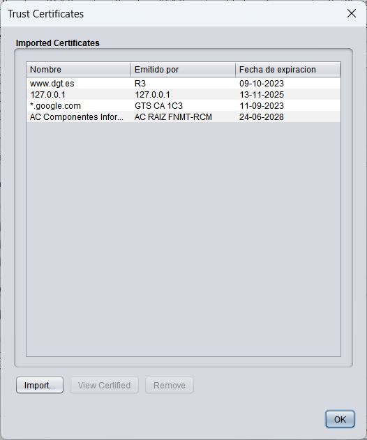
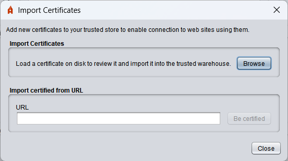
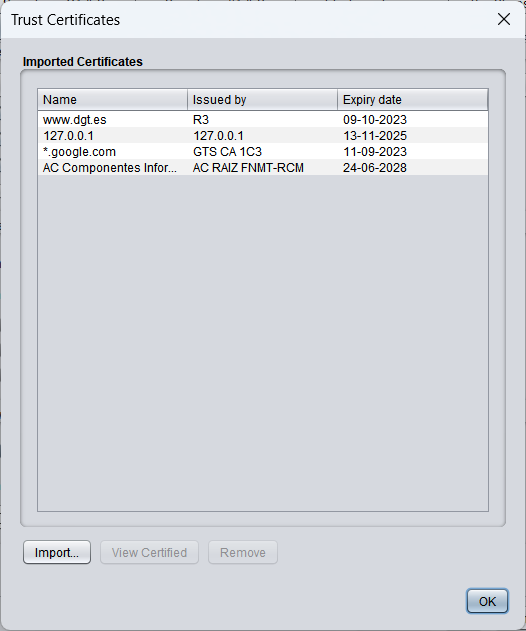

Trust certificates
Autofirma makes connections to remote servers for various functions. In this section, it is permitted to import the certificates of the servers to which Autofirma connects to the trust warehouse to be recognized as trustworthy.

The options on this screen are:
- Import: Selecting this option will open a dialog where you can import a certificate by selecting the file from a local route or from a URL. If it is imported locally, one or more files are allowed to be selected and in case of an import via URL, the issuer and its higher certificates from the certification chain shall be imported.

Once the certificates have been obtained, the next screen with the certificates that have been loaded will appear.

The options in this window are:
- View certificate: Open a window with the information of the certificate that has been selected in the list.
- Omit: Discard the certificate that has been selected from the list so that it is not imported.
- Import certificates: Import the certificates listed to the Autofirma Trust Store.
- Close: Close the window.
- View certificate: It will open a window with the information of the certificate that has been selected in the list.
- Remove: It allows you to remove the selected certificate from the trusted Autofirma store.
If the OK button is pressed, the window will close.